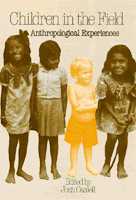

Funny, sad, horrifying, and fascinating narratives by anthropologists who brought children with them into the field
Funny, sad, horrifying, and fascinating narratives by anthropologists who brought children with them into the field


 Funny, sad, horrifying, and fascinating narratives by anthropologists who brought children with them into the field
Funny, sad, horrifying, and fascinating narratives by anthropologists who brought children with them into the field

|  |
Children in the FieldAnthropological Experiencesedited by Joan Cassellpaper EAN: 978-1-56639-206-8 (ISBN: 1-56639-206-3) |
Association of American University Presses Book Jacket Award, 1988
"The wisdom of taking children on this journey into the abyss of otherness is debatable. That's the point: the unsettled (and unsettling) quality of this book is what makes it worth reading and pondering."
—The Women's Review of Books
The conditions under which knowledge is acquired help shape that knowledge. Yet, until quite recently, the conditions under which anthropologists observe and interact with members of other cultures were considered the stuff of memoirs, not science. Although many families have accompanied anthropologists to the field, few researchers have discussed this aspect of scientific life. This collection of narratives by anthropologists who brought children with them into the field combines personal drama, practical information, and advice with an examination of the way in which the presence of children can alter the relationship between those who study and those who are studied.
The stories are funny, sad, horrifying, fascinating. Each essay presents different field conditions, locations, family constellations, experiences, and reactions. Photographs of the anthropologists and their children enhance the engaging and illuminating accounts. This book, the first study of its kind, will be essential reading for anyone involved in field research.
"A superb collection of papers documenting the value, trauma, joy, and frustration of taking children along on a field work adventure. This book covers, among other topics: burying a child in the field, bearing a child in the field, analysis of the hardships children face in a difficult field experience, and children serving as role models in language learning and the establishment of rapport with community members. This should be required reading for anyone anticipating a field work experience."
—Sue-Ellen Jacobs, University of Washington
"[These] stories...present the missing factor in anthropological research, which is after all supposed to be producing the most human of disciplines, involved with the intercultural world of woman alive and man alive; at last in this book we have children alive. The volume covers difficulties both of family and field situation and truthfully faces the differences in cultures.... The vignettes of children's lives are unforgettable."
—Edith L.B. Turner, University of Virginia
1. "Oh No, They�re Not My Shoes!": Fieldwork in the blue Mountains of Jamaica – Joan Cassell
2. Children in the Amazon – Christine Hugh-Jones
3. A Tale of Simeon: Reflections on Raising a Child while Conducting Fieldwork in Rural South India – Mimi Nichter and Mark Nichter
4. "Daddy�s Little Wedges": On Being a Child in France – Jonathan Wylie
5. Birthing in the Bush: Participant Observation in Trinidad – Morton Klass and Sheila Solomon Klass
6. Three Children in Rural Jamaica – Melanie Dreher
7. Our Ulleri Child – Patricia Hitchcock
8. Children and Parents in the Field: Reciprocal Impacts – Renate Fernandez
9. A Children�s Diary in the Strict Sense of the Term: Managing Culture-Shocked Children in the Field – Nancy Scheper-Hughes
10. "Drink from the Nile and You Shall Return": Children and Fieldwork in Egypt and the Sudan – Carolyn Fluehr-Lobban and Richard Lobban
Conclusion – Joan Cassell
 | Joan Cassell is a Research Associate in the Department of Anthropology, Washington University, and the author of Expected Miracles: Surgeons at Work (Temple) and Life and Death in Intensive Care (Temple). |
© 2015 Temple University. All Rights Reserved. This page: http://www.temple.edu/tempress/titles/492_reg.html.